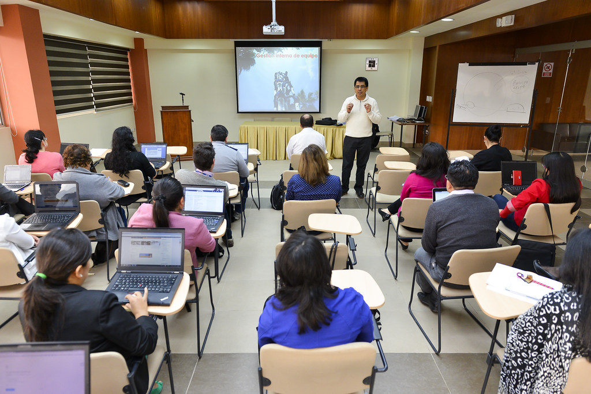

Información

Es la modalidad de formación permanente del profesorado que consiste en una estancia temporal en una empresa o institución pública o privada.
Atlantic Technological University



Estancias en formación
-
Comunidad Valenciana
- Dudas sobre convocatorias: estadesempreses@gva.es
- Estancias formativas en empresas curso 2023/24 (PRÓXIMAMENTE)
- Estancias formativas en empresas curso 2022/23: aquí
-
Programa de estancias de formación en empresas
- Forma de presentación electrónica: aquí
- Registro presencial: Registro de la Consejería de Educación de la Junta de Castilla y León (Monasterio de Nuestra Señora de Prado, Autovía Puente Colgante, s/n 47071 Valladolid)
- Plazos
- Para las estancias a realizar entre el 2 de mayo y el 1 de septiembre, el plazo de presentación de solicitudes comenzará el día 10 de enero y finalizará el 1 de febrero de cada año.
- Para las estancias a realizar entre el 1 de diciembre y el 30 de abril el plazo de presentación de solicitudes comenzará el día 1 de septiembre y finalizará el 20 de septiembre de cada año.
-
Estancias profesionales INTEF
- Tiene la posibilidad de realizar estancias de dos semanas en centros educativos de Alemania, Austria, Bélgica, Estonia, Dinamarca, Finlandia, Francia, Italia, Malta, Noruega, los Países Bajos, Portugal, Reino Unido, Irlanda, Suecia y Suiza